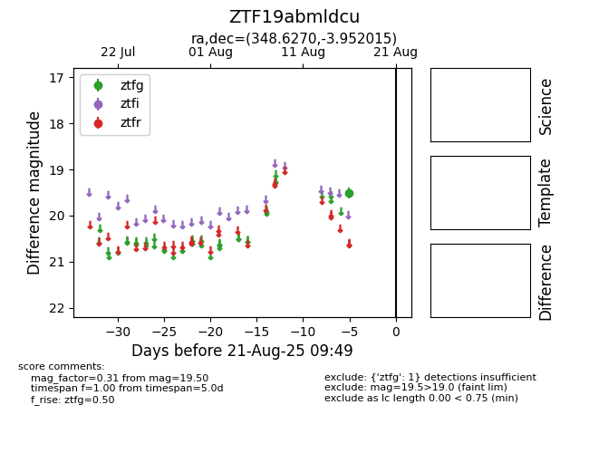

Target ZTF19abmldcu at 2025-08-21 09:49, see:
FINK: fink-portal.org/ZTF19abmldcu
Lasair: lasair-ztf.lsst.ac.uk/objects/ZTF19abmldcu
ALeRCE: alerce.online/object/ZTF19abmldcu
alt names
ZTF19abmldcu (ztf,alerce)
coordinates:
equatorial (ra, dec) = (348.6270,-3.95202)
galactic (l, b) = (73.7350,-57.25285)
photometry
last ztfg=19.50
1 ztfg detections
